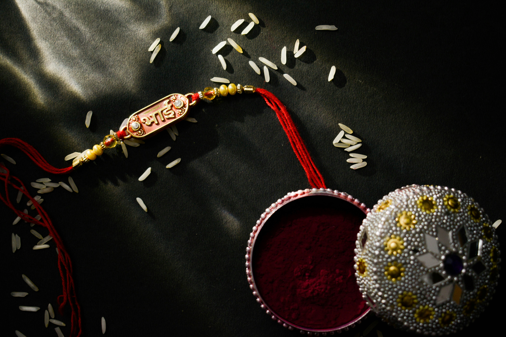

Raksha Bandhan, also known as Rakhi, is a traditional Hindu festival that celebrates the bond of love and duty between brothers and sisters. It is observed on the full moon day of the Hindu month of Shravana, which typically falls in August. The festival is marked by the tying of a rakhi, or sacred thread, by a sister on her brother's wrist. This symbolizes her love and prayers for his well-being, and his lifelong vow to protect her.
The origin of Raksha Bandhan dates back to ancient times and has many myths and historical legends linked to it. One of the most popular stories is that of Lord Krishna and Draupadi, the wife of the Pandavas. According to the legend, when Lord Krishna cut his finger, Draupadi tore a strip of cloth from her saree and tied it around his wrist to stop the bleeding. Touched by her concern, Krishna declared himself bound by her sisterly affection and promised to protect her.
Today, Raksha Bandhan is celebrated with great fervor across India. The day starts with a prayer, after which sisters tie the rakhi on their brothers' wrists and exchange sweets. The brothers, in turn, give their sisters gifts and pledge to take care of them. Raksha Bandhan strengthens the close relationship between siblings and is a time for family reunions and celebration.